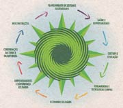
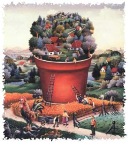

"Permacultura é o planejamento e a manutenção
consciente de ecossitemas agriculturalmente produtivos, que tenham a
diversidade, estabilidade e resistência dos ecossitemas naturais. É
a integração harmoniosa das pessoas e a paisagem, provendo alimento,
energia e outras necessidades, materiais ou não, de forma sustentável".
(Bill Mollison, Introdução a Permacultura)
Permacultura no IpeTerras
"Antigamente o Sertão tinha uma agricultura diversificada e relativamente confiável.
Nos últimos 20 anos, porém, tem-se testemunhado a destabilização da agricultura
familiar sertaneja, em maior parte devido a introdução do trator, da monocultura e
formas de manejo que ressecam o solo, provocando o colapso da agricultura e da economia local
resultando num êxodo rural generalizado" (Marsha Hanzi).
Com a chegada dessas técnicas "modernas" de praticar agricultura deixando os
solos sem proteção, usando adubos químicos e provocando o desmatamento,
a região, além de ter uma produtividade agrícola baixa esta sofrendo um
preocupante processo de desertificação.
O IPÊTERRAS, graças a Permacultura, busca a disseminação de práticas alternativas
que buscam o equilíbrio entre os seres e a natureza.
Recuperação e conservação de solo: em 1997,
os fundadores do Instituto de Permacultura em Terras Secas compraram uma
propriedade de 06ha de solo altamente degradados. A equipe teve que começar
com um importanter trabalho de recuperação do solo. Uma parte do terreno sendo
inclinada, foi necessária a construção de muretas de pedra e valetas em curva
de nível com cordão de retenção.
Hoje, uma boa parte do solo nesse 06ha esta recuperado. Para garantir uma
boa conservação do solo, esse fica sempre coberto.
Preservação: o IPÊTERRAS
comprou uma área de Caatinga de 08ha em 2002. Essa área é voltada para á
preservação.
Aproveitamento de energias renováveis:
a única fonte de água do IPÊTERRAS é a água de chuva. O Instituto possui 4
cisternas com armzenamento total de 120 000 litros. A única fonte de energia
no IPÊTERRAS é a energia solar.
Agricultura diversificada:
policultura faz parte dos principios básicos aplicados no IPÊTERRAS.
Dessa forma a colheta é permanente (o ano todo). Além do plantio de feijão,
milho, mamona e aipim quando a chuva permite, podemos listar as seguintes
plantas: sorgo, gliricídia, palma, acerola, umbu, siriguela, amorra, piña,
algodão, pimenta, plantas medicinais, arvéres típicas do clima semi-árido,
produção de sombra, de lenha...
Apicultura: Pequeno trabalho de apicultura
na Roça Permanente. É um desafio de aumentar a produção.
Sistemas Agroflorestais Sustentáveis
(SAFs) ou florestas produtivas: após observação da natureza e imitando-a
o IPÊTERRAS esta desenvolvendo grande áreas de florestas produtivas utilizando
plantas locais e adaptaveis (ex: gliricidia). A ideia é de criar áreas nas
quais as plantas se ajudam e protegam mutualmente como na prôpria natureza.
Galinheiro permacultural:
o galiheiro permacultural tem 8 faces e 8 saidas.
A ideia é criar uma rotação np piquete das galinhas.
Filosofia geral: de forma geral,
o IPÊTERRAS aplica os principios éticos da permacultura: valorização das
trocas e intercâmbios de pessoas - produtos, reciclagem, respeito do meio-ambiente...
Permacultura no Brasil:
Teoria geral sobre Permacultura
"Permanent Agriculture" em inglês - nasceu na cabeça de Bill Mollison,
ex-professor universitário australiano, na década de 1970. Refugiado das
loucuras da sociedade de consumo, Mollison percebeu que nem os cantos
remotos do interior australiano onde morava seria poupado do colapso
planetário iminente - a flora e a fauna estavam diminuindo sensivelmente...
Foi assim que nasceu a idéia de criar sistemas de florestas produtivas para
substituir as monoculturas de trigo e soja, responsáveis pelo desmatamento
mundial. Observando e imitando as formas de florestas naturais do lugar,
revelou-se possível a criação de sistemas altamente produtivos, estáveis
e recuperadores dos ecossistemas locais.
Princípios, Estratégias, Técnicas:
- Quanto mais se aproxima da natureza, menos esforço se faz.
- A diversificação garante a estabilidade.
- A estabilidade vem quando se fecham os ciclos.
- Todo sistema deve produzir mais energia do que consome.
- É mais barato prevenir emergências que enfrentá-las.
- Visa-se cooperação em vez de competição e integração em vez de fragmentação.
Para se planejar um sistema de auto-sustento, é preciso clareza nos princípios de
base que norteiam o trabalho. Na Permacultura, um dos princípios é a
cooperação e outro princípio fundamental para projetar um sistema
sustentável é o do respeito pela sabedoria da Natureza, que desenvolveu
um sistema perfeito para cada lugar.
Então qualquer projeto começa com a observação aguçada da natureza do local.
Assim, do princípio (respeito pela sabedoria da Natureza) surge a
estratégia (observar e copiar a Natureza), da qual surgirão as inúmeras
técnicas, que podem ser emprestadas de outras situações similares, ou criadas no local.
Em resumo, o princípio é o porquê de fazer, p. exemplo, um muro naquele
lugar, daquele jeito. Sem princípios claros, as mesmas técnicas podem
ser tanto benéficas quanto destrutivas. A estratégia é saber onde e
quando fazer o muro (a técnica dentro do espaço e do tempo). As técnicas
são os materiais que se usam para a construção do muro e como montá-los.
Por este motivo, o treinamento em Permacultura depende mais do ensinar
a observar e tirar conclusões a respeito de uma situação, com algumas
estratégias básicas mais universais que podem se aplicar em qualquer
situação. As técnicas são muitas dentro da literatura e estão longe
de esgotar as possibilidades de cada lugar. Entendendo as estratégias,
qualquer pessoa pode avaliar ou criar a técnica apropriada para determinada
situação.
As possibilidades de cada lugar são infinitas e é o homem que define
o propósito, que dá o impulso. Uma vez dado o impulso, a Natureza
equilibra e o homem observa e ajusta suas ações pelo retorno recebido
da Natureza. Assim, desenvolve-se uma verdadeira parceria de cooperação
entre os dois.
Por este motivo, é imprescindível uma intenção clara para cada projeto.
A Lei da Otimização da Vida
Segundo Bill Mollison, os princípios de um projeto permacultural devem
considerar a ecologia, a conservação de energia, o paisagismo e a
ciência ambiental. Em resumo:
Localização relativa: cada elemento é posicionado em relação a outro,
de forma que auxiliem-se mutuamente;
Cada elemento executa muitas funções;
Cada função importante é apoiada por muitos elementos;
Planejamento eficiente do uso de energia para casa e assentamentos;
Preponderância do uso de recursos biológicos sobre o uso de combustíveis
fósseis;
Reciclagem de energias (humana e combustível)
Utilização e aceleração da sucessão natural de plantas, visando o
estabelecimento de sítios e solos favoráveis;
Policultura e diversidade de espécies benéficas, objetivando um
sistema produtivo e interativo;
Utilização de bordas e padrões naturais para um melhor efeito.
